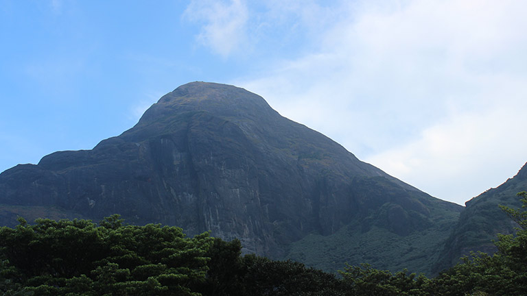
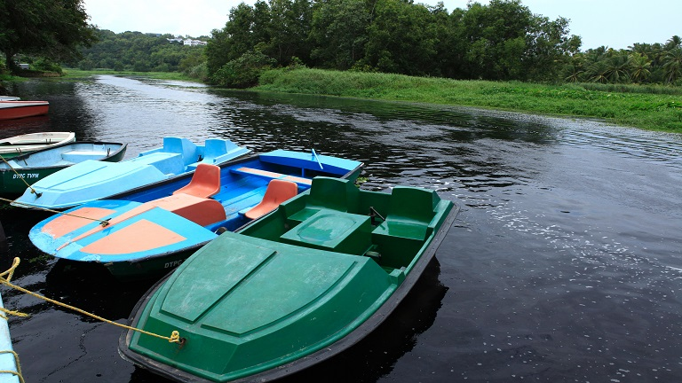
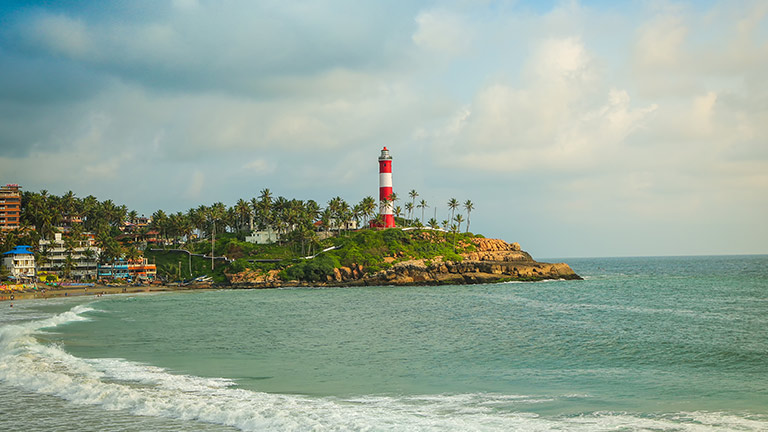

Welcome to Thiruvananthapuram
A city adorned with lush greenery, tranquil backwaters and exquisite beaches is Thiruvananthapuram,
the capital city and cultural hub of God,s Own Country. This "Evergreen City of India" is located in the
southwestern tip of Indian mainland and lies straddled by the Arabian Sea in the west and the magnificent highlands of Western Ghats in the east. The city is named after Ananda Padmanabha or Lord Vishnu, owing to the great legacy of the erstwhile rulers of Travancore who dedicated their Kingdom to Lord Padmanabha, the presiding deity of Sri Padmanabhaswamy Temple. Apart from the incredible beauty of the many internationally renowned beaches and delightful picnic spots, the city is also home to many historical monuments and temples. Start out a journey to this clean and green city of Kerala,
explore and revel in its mystic charm.

Agasthyakoodam
An enchanting green paradise that welcomes one with its deep lush woods and diverse wildlife, Agasthyakoodam is a part of the Western Ghats which stands majestically at a height of 1,890 m above sea level. With a wide variety of medicinal plants and herbs, even the air of this legendary mountain is supposed to have healing powers. Being the second highest peak in Kerala, it provides you with excellent trekking options. Agasthyakoodam is accessible by foot from Kottoor, near Neyyar Dam, and also from Bonakkad. Bonakkad is the base station of Agasthyakoodam with splendid scenery.
Mythology says that sage Agasthya (a sage in Hindu mythology) lived here.

Akkulam
The enchanting aura of the Akkulam backwaters offers an escape from the hassles of real life. Located at a distance of 10 km from Thiruvananthapuram this backwater with a nearby tourist village run by the DTPC, Thiruvananthapuram is a paradise for tourists. With boating facilities, a well equipped children’s park, and a paddle pool, children flock to this place.
Akkulam offers a swimming pool for adults too.

Kovalam Beach
With sun kissed shores, swaying coconut palms, serene environs, a quaint lighthouse and stunning sunsets,
Kovalam stands as a paradise of aesthetic elegance and exotic beauty. An internationally renowned sea side destination in
Thiruvananthapuram, Kovalam is truly astounding seashore fringed by coconut groves and flanked by highlands.
Kovalam creates the perfect ambience for a holiday with the three adjacent crescent-shaped beaches- Lighthouse Beach,
Eve’s Beach or Howah Beach and the Ashoka Beach, of which Lighthouse Beach is the most popular.
The Eve’s Beach and the Lighthouse Beach are separated by a rocky headland called, Edakallu.